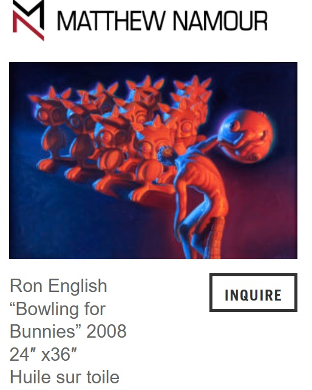
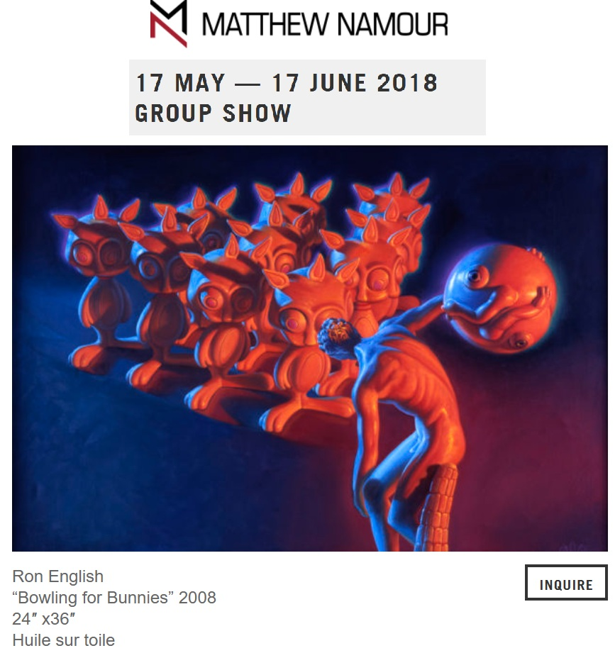
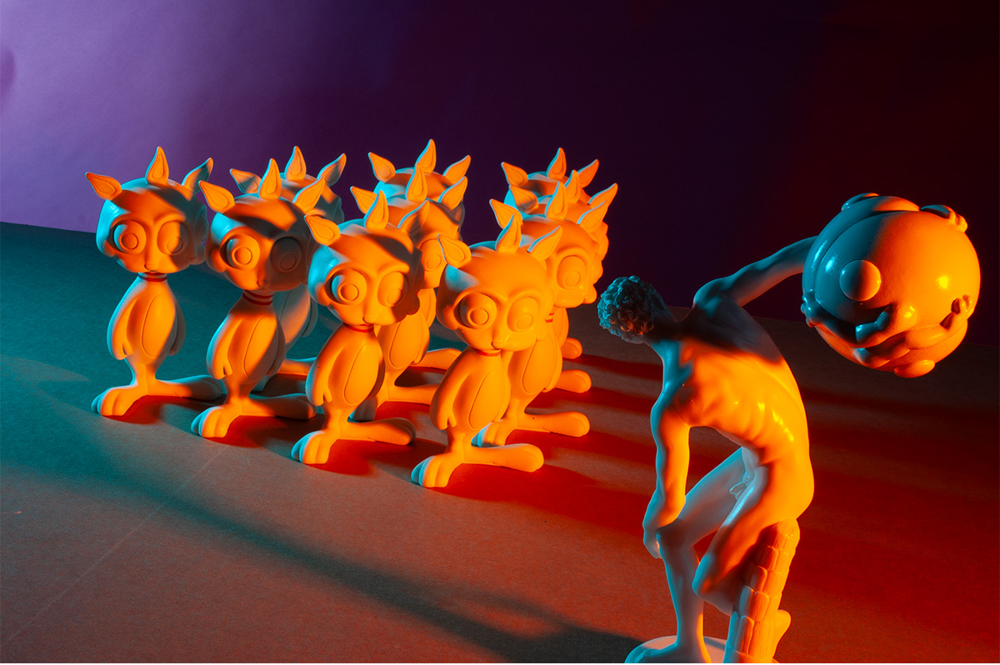

Exhibitions
Immortal Underground, Opera Gallery, New York, New York, US, November 12–December 2, 2009.
Group Exhibition, Matthew Namour Gallery, Montreal, Quebec, Canada, May 17–June 17, 2018.
Notes
This work appears in Getty Images’ editorial event photographs of Immortal Underground by Ron English at Opera Gallery, New York City, available here, accessed April 12, 2026.
It is also documented on Matthew Namour Gallery’s artist page for Ron English, available here, and on the gallery’s exhibition page for Group Exhibition, available here.
Ancillary Documentation


